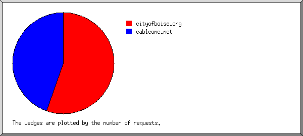
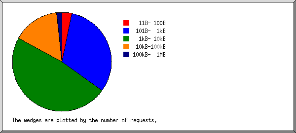
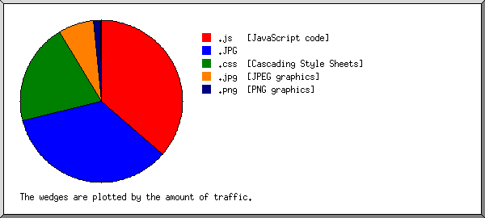

Web Server Statistics for rcpropertywatch.com Web Server Statistics for rcpropertywatch.com
Web Server Statistics for rcpropertywatch.com Web Server Statistics for rcpropertywatch.com(Go To: Top: General Summary: Daily Summary: Hourly Summary: Domain Report: Organization Report: Operating System Report: Status Code Report: File Size Report: File Type Report: Directory Report: Request Report)
This report contains overall statistics.
Successful requests: 123
Average successful requests per day: 141
Failed requests: 5
Distinct files requested: 84
Distinct hosts served: 2
Data transferred: 1.04 megabytes
Average data transferred per day: 1.20 megabytes
(Go To: Top: General Summary: Daily Summary: Hourly Summary: Domain Report: Organization Report: Operating System Report: Status Code Report: File Size Report: File Type Report: Directory Report: Request Report)
This report lists the total activity for each day of the week, summed over all the weeks in the report.
Each unit ( ) represents 1 request
for a page.
) represents 1 request
for a page.
day: #reqs: #pages: ---: -----: ------: Sun: 0: 0: Mon: 0: 0: Tue: 0: 0: Wed: 0: 0: Thu: 123: 0: Fri: 0: 0: Sat: 0: 0:
(Go To: Top: General Summary: Daily Summary: Hourly Summary: Domain Report: Organization Report: Operating System Report: Status Code Report: File Size Report: File Type Report: Directory Report: Request Report)
This report lists the total activity for each hour of the day, summed over all the days in the report.
Each unit () represents 1 request
for a page.
hour: #reqs: #pages: ----: -----: ------: 0: 0: 0: 1: 20: 0: 2: 0: 0: 3: 0: 0: 4: 0: 0: 5: 0: 0: 6: 0: 0: 7: 0: 0: 8: 0: 0: 9: 0: 0: 10: 0: 0: 11: 0: 0: 12: 2: 0: 13: 66: 0: 14: 0: 0: 15: 0: 0: 16: 0: 0: 17: 0: 0: 18: 0: 0: 19: 35: 0: 20: 0: 0: 21: 0: 0: 22: 0: 0: 23: 0: 0:
(Go To: Top: General Summary: Daily Summary: Hourly Summary: Domain Report: Organization Report: Operating System Report: Status Code Report: File Size Report: File Type Report: Directory Report: Request Report)
This report lists the countries of the computers which requested files.

Listing domains, sorted by the amount of traffic.
#reqs: %bytes: domain -----: ------: ------ 68: 74.45%: .org (Non Profit Making Organizations) 55: 25.55%: .net (Networks)
(Go To: Top: General Summary: Daily Summary: Hourly Summary: Domain Report: Organization Report: Operating System Report: Status Code Report: File Size Report: File Type Report: Directory Report: Request Report)
This report lists the organizations of the computers which requested files.

Listing organizations, sorted by the number of requests.
#reqs: %bytes: organization -----: ------: ------------ 68: 74.45%: cityofboise.org 55: 25.55%: cableone.net
(Go To: Top: General Summary: Daily Summary: Hourly Summary: Domain Report: Organization Report: Operating System Report: Status Code Report: File Size Report: File Type Report: Directory Report: Request Report)
This report lists the operating systems used by visitors.
Listing operating systems, sorted by the number of requests for pages.
#: #reqs: #pages: OS --: -----: ------: -- 1: 123: 0: Windows : 123: 0: Unknown Windows
(Go To: Top: General Summary: Daily Summary: Hourly Summary: Domain Report: Organization Report: Operating System Report: Status Code Report: File Size Report: File Type Report: Directory Report: Request Report)
This report lists the HTTP status codes of all requests.

Listing status codes, sorted numerically.
#reqs: status code
-----: -----------
123: 200 OK
5: 404 Document not found
(Go To: Top: General Summary: Daily Summary: Hourly Summary: Domain Report: Organization Report: Operating System Report: Status Code Report: File Size Report: File Type Report: Directory Report: Request Report)
This report lists the sizes of files.

size: #reqs: %bytes:
-----------: -----: ------:
0: 0: :
1B- 10B: 0: :
11B- 100B: 4: 0.03%:
101B- 1kB: 39: 1.76%:
1kB- 10kB: 59: 15.40%:
10kB-100kB: 19: 51.26%:
100kB- 1MB: 2: 31.55%:
(Go To: Top: General Summary: Daily Summary: Hourly Summary: Domain Report: Organization Report: Operating System Report: Status Code Report: File Size Report: File Type Report: Directory Report: Request Report)
This report lists the extensions of files.

Listing extensions with at least 0.1% of the traffic, sorted by the amount of traffic.
#reqs: %bytes: extension
-----: ------: ---------
39: 36.45%: .js [JavaScript code]
6: 34.68%: .JPG
51: 20.31%: .css [Cascading Style Sheets]
2: 7.03%: .jpg [JPEG graphics]
24: 1.42%: .png [PNG graphics]
1: 0.12%: .gif [GIF graphics]
(Go To: Top: General Summary: Daily Summary: Hourly Summary: Domain Report: Organization Report: Operating System Report: Status Code Report: File Size Report: File Type Report: Directory Report: Request Report)
This report lists the directories from which files were requested. (The figures for each directory include all of its subdirectories.)
Listing directories with at least 0.01% of the traffic, sorted by the amount of traffic.
#reqs: %bytes: directory -----: ------: --------- 123: 100%: /drupal/
(Go To: Top: General Summary: Daily Summary: Hourly Summary: Domain Report: Organization Report: Operating System Report: Status Code Report: File Size Report: File Type Report: Directory Report: Request Report)
This report lists the files on the site.
Listing files with at least 20 requests, sorted by the number of requests.
#reqs: %bytes: last time: file -----: ------: ------------------: ---- 123: 100%: May/ 3/12 7:14 PM: [not listed: 84 files]
(Go To: Top: General Summary: Daily Summary: Hourly Summary: Domain Report: Organization Report: Operating System Report: Status Code Report: File Size Report: File Type Report: Directory Report: Request Report)